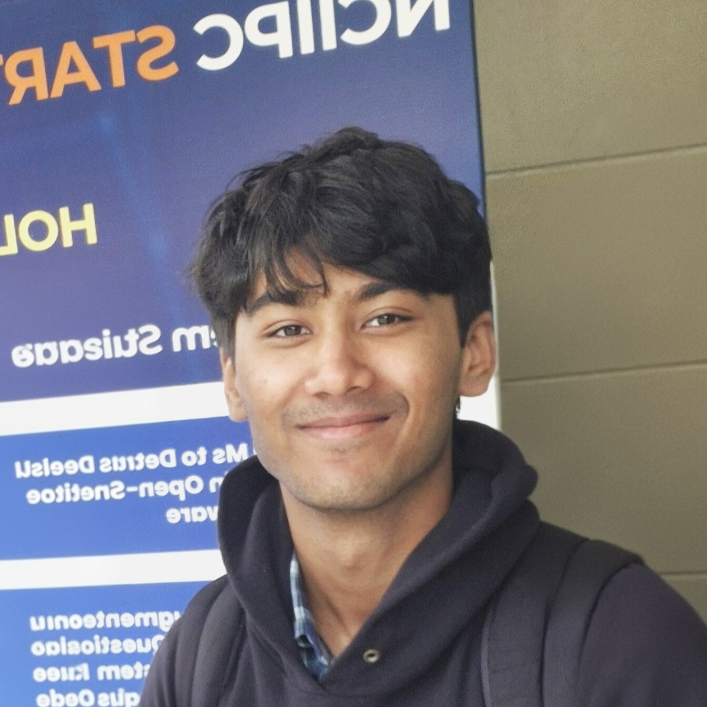
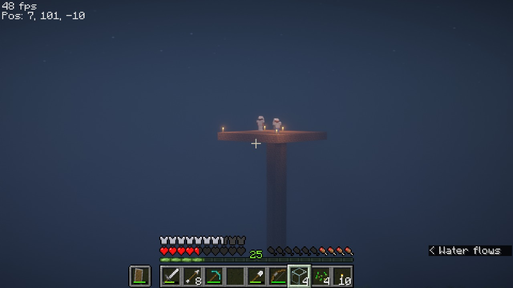

Im currently a masters student at NYU. My research interests are in computer vision and representation learning. My research at NYU's CILVR Lab is on world models for planning. I study how machines can learn compact representations of the world and then use them to plan.
Prior to this I was a student at NITK Surathkal, India where I graduated with a Bachelor of Technology in Artificial Intelligence. At NITK my thesis was on self-supervised pretraining for geospatial FMs. In the past I have done EEG signal analysis for patients with neurodegenerative diseases at IISC Bangalore.
Outside of research I love pumping weights and have a 90KG bench press PR. I also have 12K trophies on Clash Royale and a super cool minecraft base (proof at the bottom of the site).
News
-
Update
NSF travel award for ACM SIGSPATIAL 2026
I'll be attending ACM SIGSPATIAL 2026 at Riverside, CA to present my work on GeoFM pre-training.
-
Update
Started MS in CS at NYU Courant
I'm continuing my research on world models for latent planning at CILVR lab NYU. More specifically, I'm working on world models that predict in latent space and on regularization that keeps long planning rollouts reliable for model predictive control.
-
Publication
Paper accepted to ACM SIGSPATIAL 2026 (Research Track)!
Our final year thesis "A Composition Aware Pretraining Framework for Geospatial Foundation Models" was accepted for publication. We built a pretraining framework for geospatial foundation models with a training objective that reconstructs the compositional makeup of satellite imagery (unlike other SOTA GeoFMs that are trained as masked autoencoders).
Aryan Kashyap Naveen, Abhishek Srinivas, Pranav Moothedath, Shrutilipi Bhattacharjee.
-
Update
I graduated from NITK Surathkal, India!!!
-
Update
IndiaAI Fellowship
I was awarded funding to build a satellite image object search tool and geospatial FM. Project Title: "Fast and Efficient Satellite Image Search for Diverse Landcover Settings".
-
Publication
Paper presented at ICVGIP 2025
Is the Spatial Structure as Important as Temporal Structure in EEG Signals?
Aryan Kashyap Naveen, Gopika Gopan K, Neelam Sinha. 16th Indian Conference on Computer Vision, Graphics and Image Processing, IIT Mandi. Poster at AAIC 2026.
-
Update
Finalist, NCIIPC Startup India AI Grand Challenge 2026
My team was among the top 15 finalists selected to compete at IIT Delhi. Soya Chaap>>>. Problem statement: anomaly detection in hyperspectral images.
-
Update
Internship at the Centre for Brain Research, Indian Institute of Science Bangalore
I studied the informativeness of EEG signals from patients with neurodegenerative diseases under the guidance of Dr. Neelam Sinha and Dr. Gopika Gopan K.
-
Update
AutoOEP, a multi-modal framework for online exam proctoring
We built an online exam proctoring framework for our Artificial Intelligence course project.
Aryan Kashyap Naveen*, Bhuvanesh Singla*, Raajan Wankhade*, Shreesha M, Ramu S, Ram Mohana Gudetti. Accepted to the T4E conference, CVPR CV4Edu Workshop (Non archival).
-
Update
Summer internship at the Healthcare Analytics and Language Engineering (HALE) Lab, NITK
Under the guidance of Dr. Sowmya Kamath I developed CNN model ensembles for facial phenotyping of genetic disorders, covering both frequent and rare disorders.
-
Project
Built GraphLink, a graph theory based social media friend recommendation system
We built a Django-based social platform with a user recommendation engine powered by graph theory and 0 ML. There are a bunch of cool features like real-time community detection, you can check it out at the link below. (We made this for our discrete math course project)
-
Project
Published mcfinance, a financial data extraction library
We published a Python library to scrape, parse, and analyze the financial statements of Indian companies, it has over 10,000 downloads!
-
Update
Started my B.Tech in Artificial Intelligence at NIT Karnataka, India
Stuff
